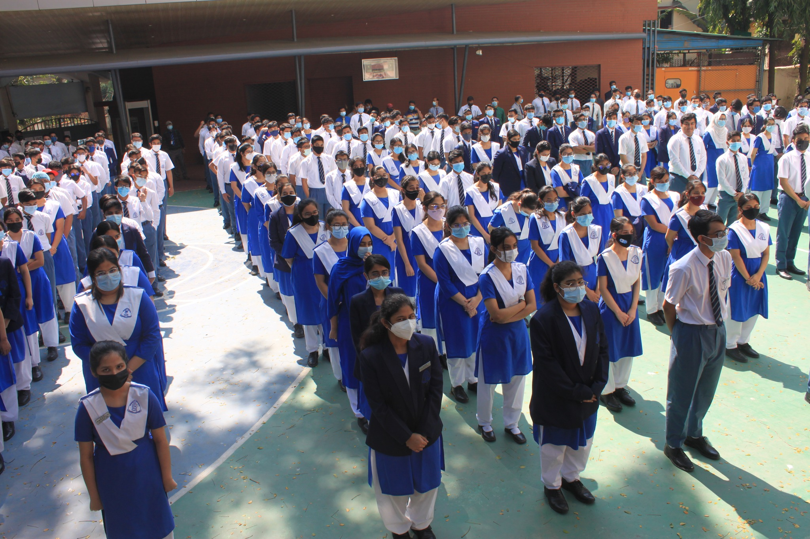
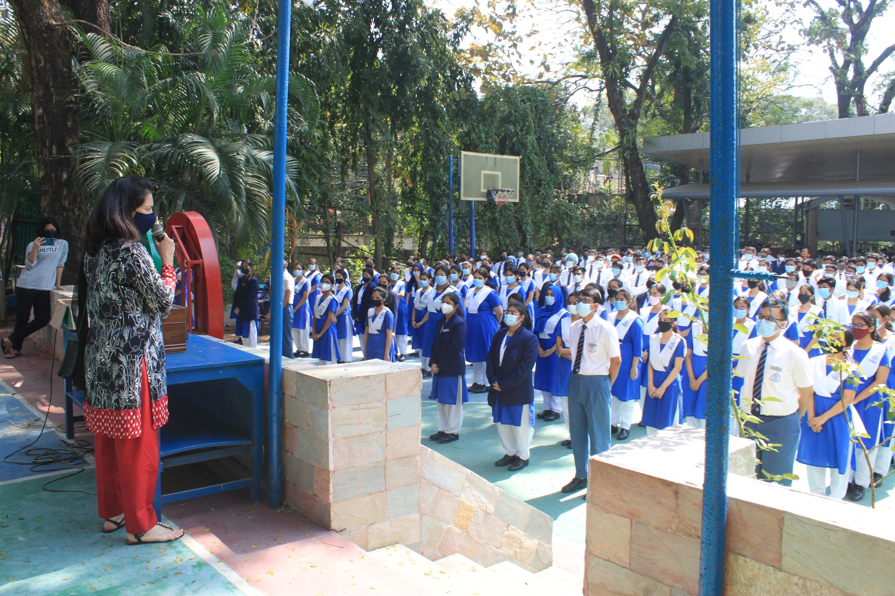

Made by Aosaf Zawad
Being one of the most prestigious schools in my city, I am at a loss for words as to how lucky I feel being a part of the Chittagong Grammar School family. Chittagong Grammar School(CGS) has presented me with a multitude of opportunities. CGS has always nurtured me with the education and disclipline that would be essential to my growth and personal development. Consequentially, I have been trained to handle extreme pressure, focus on my final goal, and learn my team mate's weaknesses and strengths to rely on them properly. Furthermore, I have also been blessed to have the best group of friends, irreplacable peers, inspirational seniors and probably the most talented set of juniors.
 I am pretty studious, and have found analytical subjects such as Computer Science and Mathematics very intriguing. Finding them more challenging, I usually focus on them more, at times, on the expense of other subjects. Words can never be enough to express the emotions that tie me to subjects such as CS and Mathematics; the disappointment, the joy, the exhiliration and the satisfaction relating to these subjects are truly unfathomable. However, I am also proficient in Physics and Chemistry, even though my interest in them is far less than that of my interest in CS or Mathematics. Chemistry, although scores a bit higher than Physics for me due to certain personalities in our school's Chemistry department.
In Grade 10, I had been newly appointed to become the Prefect to represent my class and enforce discipline while also setting out disputes among my classmates whenever it would occur. Grade 10 was the only year I had been selected as a Prefect, so my time with the Student Body was shorter than most. Responsible for making sure the teachers never had trouble with the students, I had also been tasked to relay information from teachers to students and vice-versa. It had been my job to inform my fellow classmates about tests, paraphernalia needed for the class later on and leading my classmates to the assemblies.
Made by Aosaf Zawad